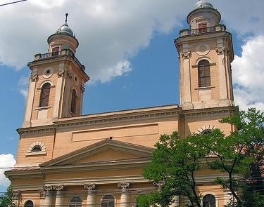
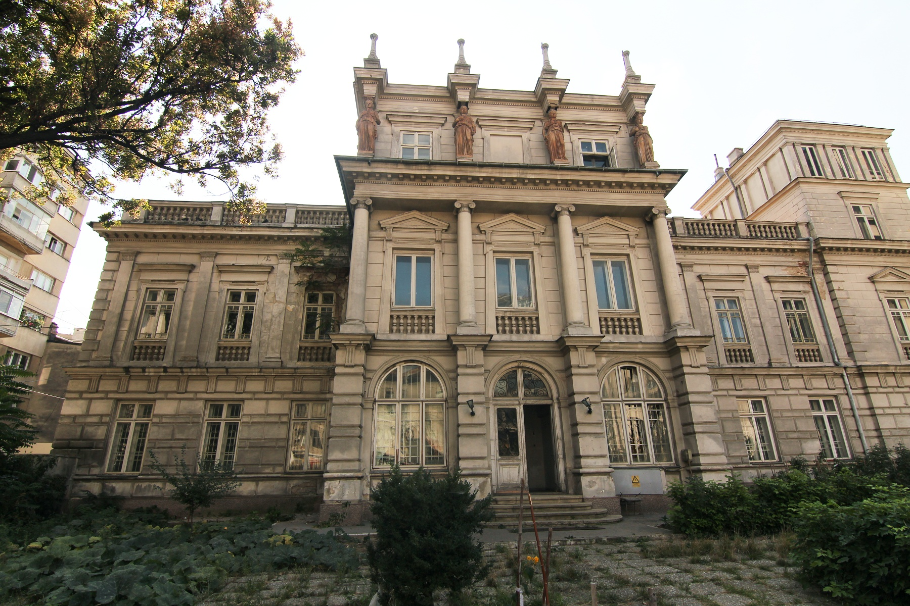

Cladiri in stil clasic
Palatul Toldalagi-Korda

Biserica Reformată-Calvină

Palatul Știrbei

Muzeul Țăranului Român

Termenul de arhitectura clasica poate fi utilizat cu referire la orice stil care tinde spre caracteristici de un inalt rafinament, si la orice stil arhitectonic care utilizeaza elemente de filosofie estetica clasica. Termeni precum „arhitectura traditionala” sau „arhitectura vernaculara” pot fi de asemenea intalniti.
Epoca clasicismului a căzut într-o perioadă foarte importantă în dezvoltarea urbană europeană. La acea vreme, nu numai unitățile rezidențiale, dar și obiectele nelocuite și spațiile publice, care necesită un design arhitectural, au fost plasate masiv: spitale, muzee, școli, parcuri etc.
Arhitectura clasică derivă de la arhitectura Greciei Antice și cea a Romei Antice. Odată cu prăbușirea părții de vest a Imperiului Roman, tradițiile arhitecturale ale Imperiului Roman au încetat să mai fie practicate în mari părți din Vestul Europei. În Imperiul Bizantin, modurile antice de construire au continuat, dar relativ curând s-au dezvoltat într-un stil bizantin distinct.
Clasicismul a fost o mișcare de largă întindere în arhitectură, pictură și alte arte vizuale care a început în anii 1760, a atins apogeul între anii 1780-1790 și a durat până în anii 1840-1850.
Acest curent a răsărit în mare parte ca o reacție împotriva rămășițelor stilului Baroc și senzualului și frivolului stil decorativ Rococo, care a dominat arta europeana începând cu anii 1720. Dar un și mai profund stimul a fost un reînnoit și profund studiu științific manifestat fața de antichitatea clasică ce a răsărit în Secolul 18. Interesul pentru clasicism a fost declanșat de descoperirile arheologice, în particular explorarea și excavațiile orașelor romane îngropate de la Herculaneum și Pompeii (excavații ce au început în 1738, respectiv 1748), iar începând cu a doua decadă a secolului al XVIII-lea, un număr însemnat de publicații influente au inclus în paginile lor imagini ale monumentelor romane și a altor antichități, care au trezit rapid interesul fața de trecutul clasic. Noua înțelegere a lucrurilor desprinsă din descoperiri și publicații au permis pentru prima oară cărturarilor europeni să discerne perioade distincte și separate în arta Greco-romană iar acest nou simț al pluralității stilurilor antice le-a înlocuit pe cel vechi, cel al venerării artei romane și a încurajat un real interes pentru purele antichități grecești.
Cărturarul german Johann Joachim Winckelmann vedea în sculptura greacă „o simplitate nobilă și o tăcută grandoare” și a făcut un apel către artiști să imite arta greaca. El pretindea că făcând asta, acei artiști vor obține imitații idealizate ale formelor naturale, dezgolite de toate aspectele individualiste și imaginile lor vor obține o semnificație universală. Pornind de la modelele artistice (arhitectură, sculptură, literatură) ale Antichității, considerate ca întruchipări perfecte ale idealului de frumusețe și armonie, clasicismul aspiră să reflecte realitatea în opere de artă desăvârșite ca realizare artistică, opere care să-l ajute pe om să atingă idealul frumuseții morale.
Curentul Clasicismului se extinde pe suprafața întregii Europe, notabile fiind Sankt Petersburg și München, orașe transformate în adevărate muzee de arhitectură clasică, el continuând să fie o forță academică majoră pe tot parcursul secolului al 19-lea și chiar mai mult, fiind o constantă antiteză în reînvierea Romantismului sau Goticului. Cu toate astea, de la sfârșitul secolului înainte, stilul începe a fi considerat anti-modern sau chiar reacționar în anumite cercuri influente de critici